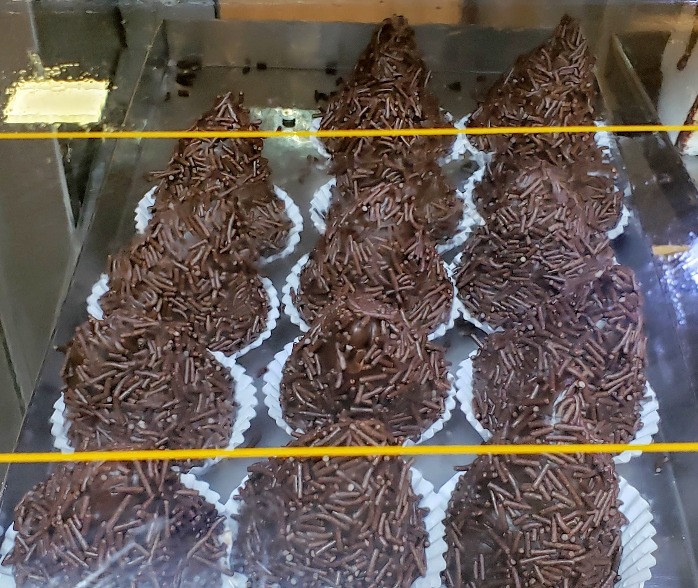

This is a page dedicated to show how beautiful and delicious is the best Brazilian delicatessen: coxinha!
It may be found in many different variations, as below.
Traditional coxinha:
Coxinha made of brigadeiro (a Brazilian sweet):
